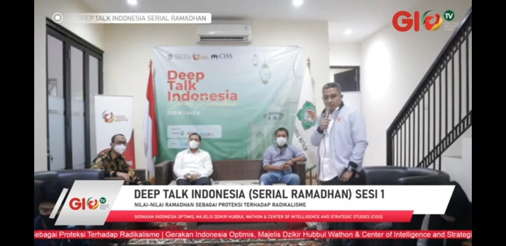

Jakarta – Kabar Lazisnu Cengkareng
Atas nama pengurus LAZISNU-Cengkareng, Cecep Supriyadi selaku ketua beserta staf dan jajaran mengucapkan selamat dan sukses kepada Dr. Ngasiman Djoyonegoro selaku ketua umum Gerakan Indonesia Optimis (GIO) atas terselenggaranya kegiatan Deep Talk Indonesia Serial Ramadhan dengan mengusung Tema, sesi I "nilai-nilai ramadhan sebagai proteksi terhadap radikalisme".
Kemudian disampaikan oleh ngasiman Djoyonegoro, bahwa kegiatan serial ramadhan ini merupakan langkah awal untuk melakukan banyak kebaikan di berbagai sektor pasca pandemi. Selanjutnya, beliau menyampaikan, akan ada deep talk indonesia serial berikutnya, yaitu sesi II tentang G20, sesi III tentang ketahanan pangan dan sesi IV tentang mudik.